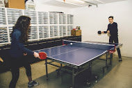
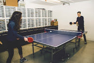

Dancing Derek was trapped in the elevator between floors two and three as he was going back up to class from lunch with his bag of McDonalds. After all of his fries and nuggets were gone, Derek began to panick as his phone was dying and he had no signal. He frantically tried calling for help but no one heard him as he was in the elevator. When his phone was at one percent fearing death Derek began a scared dance for help. Someone walking by the elevator doors heard Derek's dance. The stranger notified the main lobby, and they notified the athorities who were able to free him from the elevator. After being stuck for about an hour he was finally freed from the elevator.

A Tournament with skill equal to the Olympics. Drawing crowds from all around the world to watch the legendary tournament. The first round of the tournment started out with Aayon vs Alex, winner Aayon: final score 11-7. Chris Christmas vs Derick, winner Chris: final score 11-8. Cayden vs Caroline, winner Cayden: final score 11-9. Elli vs Alle, winner Elli: 12-10. Round two Aayon vs Chris Christmas, winner Chris: 13-11. Cayden vs Elli, winner Elli: 21-19. The final round Chris Christmas vs Elli. After a half an hour of a extremely intense game it was finally settled, the final score 11-9. Winner Elli.
 

The teachers and most students were left with misty eyes and memories of their childhood. Listening to songs from Hilliary Duff and Aaron Carter, one student had this to say, "Listening to those songs brought me back to when I was a child." And now I realize it brought me back a decade when those songs were popular. Also a very sad fact and a thing of reality is that we can never relive these moments no matter how much we want to or try. Even now this moment is slipping through our fingers like grains of sand.